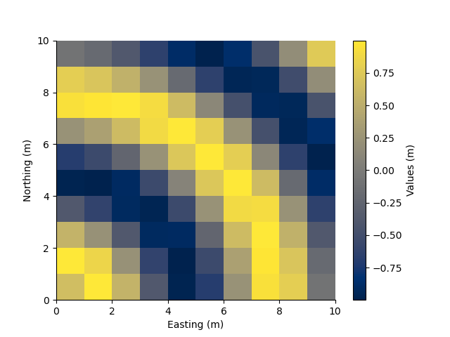

Note
Go to the end to download the full example code.
2D Rectilinear Model
This 2D rectilinear model defines a grid with straight cell boundaries.
from geobipy import StatArray
from geobipy import RectilinearMesh2D
from geobipy import Model
import h5py
import matplotlib.pyplot as plt
import numpy as np
Specify some cell centres in x and y
x = StatArray(np.arange(11.0), 'Easting', 'm')
y = StatArray(np.arange(11.0), 'Northing', 'm')
mesh = RectilinearMesh2D(x_edges=x, y_edges=y)
xx, yy = np.meshgrid(mesh.x.centres, mesh.y.centres)
values = StatArray(np.sin(np.sqrt(xx ** 2.0 + yy ** 2.0)), "Values")
mod = Model(mesh=mesh, values = values)
plt.figure()
mod.pcolor()
mod2 = mod.resample(0.5, 0.5)
mod3 = mod.resample(1.5, 1.5)
plt.figure()
plt.subplot(121)
mod2.pcolor()
plt.axis('equal')
plt.subplot(122)
mod3.pcolor()
plt.axis('equal')
# #%%
# # We can plot the mesh in 3D!
# pv = rm.pyvista_plotter()
# pv.show()
# rm.to_vtk('Model3D.vtk')
with h5py.File('Model2D.h5', 'w') as f:
mod.toHdf(f, 'model')
with h5py.File('Model2D.h5', 'r') as f:
mod2 = Model.fromHdf(f['model'])
plt.show()
- 

Total running time of the script: (0 minutes 0.212 seconds)